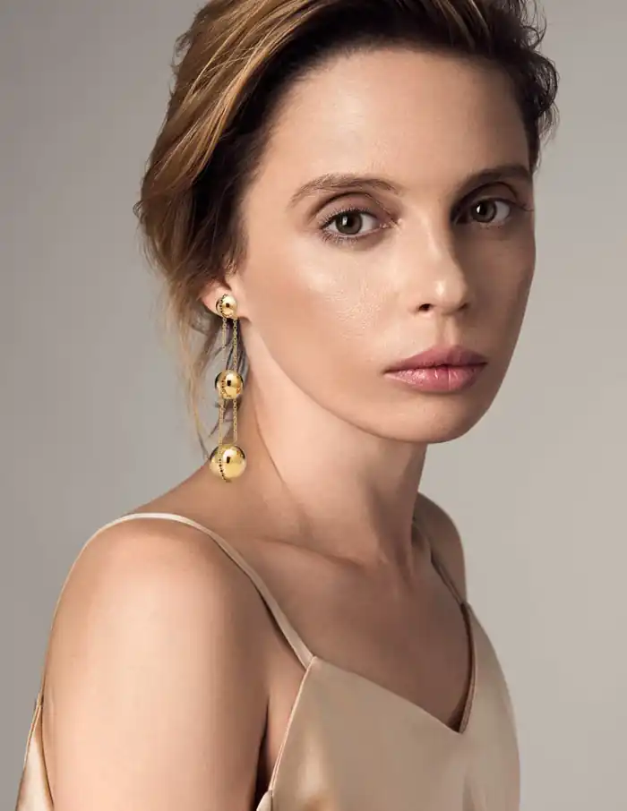
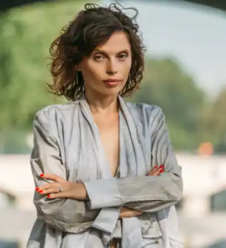

Народилася 8 грудня 1980 року в Черкасах. Через два роки родина переїхала до Івано-Франківська, а звідти — в Яремче на Прикарпатті. Молодша сестра Галина Карпа — письменниця, співзасновниця і екс-шеф-редакторка артжурналу "Аж", авторка книги оповідань "Ппппппп". Карпа вчилася у художній школі. Щоліта відвідувала бабусю в Черкасах і у 11-річному віці твердо перейшла на спілкування українською на той час в російськомовних або суржикомовних Черкасах. Однолітки глузували, перекручуючи українські слова і називаючи її "селючкою", проте вона не піддавалася тиску.
У 1998 році вступила до Київського національного лінгвістичного університету на відділення французької філології. Закінчивши навчання у 2003 році, отримала ступінь магістра іноземної філології за спеціальністю "англійська та французька мови". Темою її дипломної роботи були "Прояви архетипу Великої Матері в романах Мішеля Уельбека "Елементарні частинки" і Юрка Іздрика "Подвійний Леон"".
У травні 2008 року одружилася з київським журналістом і письменником Антоном Фрідляндом. Влітку 2009 року розлучилася і одружилася з американським фінансистом Норманом Полом Генсеном у Сан-Франциско. У серпні 2010 року в Берліні народила дочку Корену-Джіа. У липні 2011 року в Барселоні народила дочку Кайю. У березні 2014 року в інтерв'ю Катерині Осадчій Карпа сказала, що розійшлася з Генсеном. У жовтні 2015 року в новому інтерв'ю Осадчій зазначила, що вони не розлучалися і у них "цивілізовані американо-європейські відносини". Тоді ж прокоментувала чутки про стосунки з російським політтехнологом Ігорем Шуваловим, заявивши, що підтримує з ним дружбу. У жовтні 2018 року повідомлено про шлюб Карпи з громадянином Франції Людовиком-Кирилом Требюше. Ще у школі Карпа брала участь у духовому ансамблі. У 16 років записала першу пісню "Я чекатиму". Займалася вокалом під час навчання в університеті. В цей час познайомилася з Олегом Артимом, гітаристом і лідером гурту "Фактично Самі". Записавши з ним як експеримент електронний трек "Повітря", Карпа незабаром приєднується до "Фактично Самих" і стає вокалісткою і басисткою гурту. У 2003 році Карпа записала вокальні партії відразу для двох наступних альбомів і поїхала на рік в Індонезію. За її відсутності Артим і Данієлян продовжили роботу над альбомами, а до гурту приєдналася віолончелістка Євгенія Смолянінова. У 2007 році "Фактично Самі" випустили раніше записаний "Космічний вакуум" і змінили назву на Qarpa. Вже в новій якості гурт в тому ж році представив альбом "IN ЖИР". Одну з пісень, "Клей", написав лідер "Скрябіна" Андрій Кузьменко, а в пісні "Леді Ду" разом з Карпою співає вокаліст "Тартака" Сашко Положинський. У вересні 2011 року у київському клубі Crystal Hall пройшла презентація альбому "& I made a man". Альбом писався протягом 10 років і включив пісні англійською, іспанською та французькою. У грудні 2012 року Карпа з гуртом виступила на розігріві концерту Меріліна Менсона в Києві, вийшовши на сцену в сукні з сала. У травні 2015 року Qarpa випустила альбом "Made in China", а в липні презентувала кліп "Розмір має значення" на пісню "Допобачення" з альбому. В листопаді 2015 року гурт виступив на спільному концерті з Kozak System у київському клубі "Sentrum", виконавши треки з "Made in China". У 2001 році колишній продюсер гурту "Фактично Самі" Олег "Мох" Гнатів (який згодом став продюсером "Перкалаби") показав тексти Карпи своєму знайомому Юрію Іздрику, головному редактору літературного журналу "Четвер". В результаті у "Четверзі" була опублікована спочатку розповідь "Білявчік", а потім "Сни Ієріхона". Тоді ж Карпа почала друкуватися в молодіжному журналі "Молоко" під псевдонімом "Соя Лось". Перша книга Ірени Карпи — "Знес Паленого" — була видана в 2002 році в Івано-Франківську. До неї, зокрема, увійшли повість "50 хвилин трави" та оповідання "Сни Ієріхона". Ці ж твори разом з розповіддю "Ґанеша и Синкопа" та інтерактивним романом "Полювання в Гельсінкі" склали книгу "50 хвилин трави", видану в 2004 році видавництвом "Фоліо". У тому ж році "Фоліо" видало роман "Фройд би плакав", що став підсумком подорожі Карпи Південно-Східною Азією. У 2010 році новела Карпи "Цукерки, фрукти і ковбаси" увійшла до збірки "Декамерон. 10 українських прозаїків останніх десяти років", випущеної до ювілею видавництва КСД. У вересні 2011 року вийшла книга "Піца "Гімалаї"". Карпа написала її, перебуваючи в Гімалаях, і охарактеризувала її зміст як "діалог християнства з буддизмом". У 2013 році стартував інтерактивний проєкт письменниці "Історії моїх жінок", створений, щоб жінки могли поділитися своїми історіями з іншими. Незабаром вийшло однойменне періодичне видання. У 2014 році вийшла збірка Карпи "Письменниця, співачка, мандрівниця", до якої увійшло інтерв'ю з Карпою, її колумністика і свіжа есеїстика. У тому ж році вийшла книга "Baby travel. Подорожі з дітьми або, Як не стати куркою" з іронічними історіями про подорожі різними країнами світу разом з дітьми. Навесні 2015 року Карпа уклала збірку "Волонтери. Мобілізація добра", яка включила кілька творів самої Карпи, а також вірші, оповідання й есе інших українських авторів. У 2019 році, після тривалої паузи, Карпа представила новий роман "Добрі новини з Аральського моря". Книга була представлена на IX Міжнародному фестивалі "Книжковий арсенал". Видавництво "Книголав" назвало роман найпопулярнішою книгою фестивалю. Понад 1 000 примірників було куплено відвідувачами. Бібліографія: Знес Паленого (2000) 50 хвилин трави (2004) Фройд би плакав (2004) Перламутрове Порно (Супермаркет самотності) (2005) Bitches Get Everything (2007) Добло і зло (2008) Цукерки, фрукти і ковбаси (2010) (у складі збірки "Декамерон. 10 українських прозаїків останніх десяти років") Піца "Гімалаї" (2011) З Роси, з Води і з Калабані (2012) Baby Travel. Подорожі з дітьми, або Як не стати куркою (2014) Волонтеры. Мобілізація добра (2015) (укладачка збірки і авторка окремих творів) День усіх білок (2017) Добрі новини з Аральського моря (2019) Як виходити заміж стільки разів, скільки захочете (2020) Тільки нікому про це не кажи (2022)